Pombão
 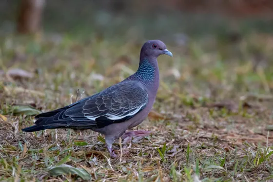
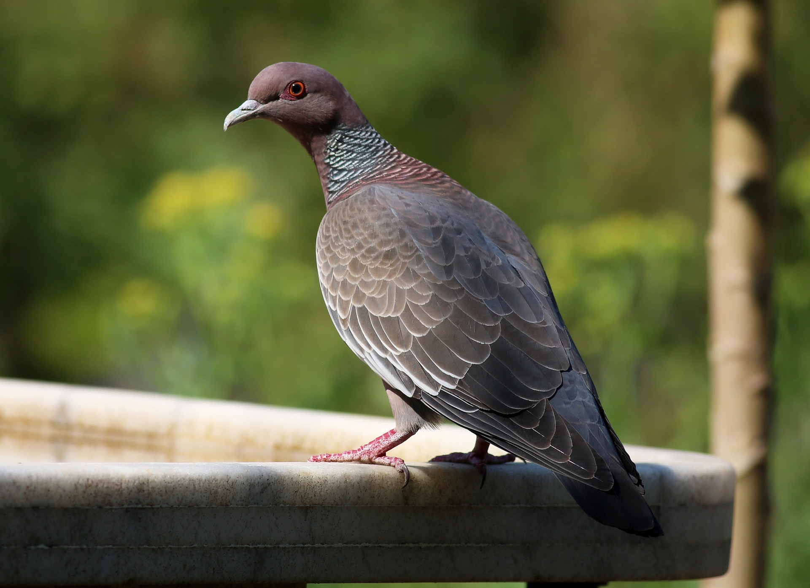
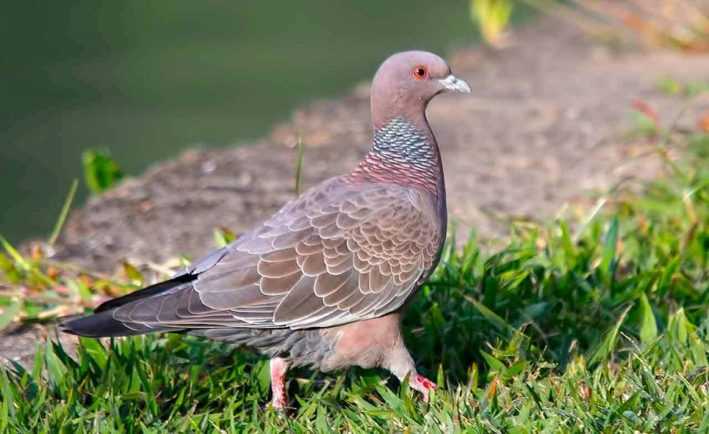
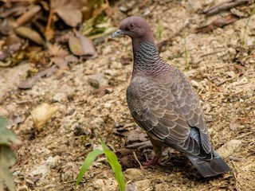
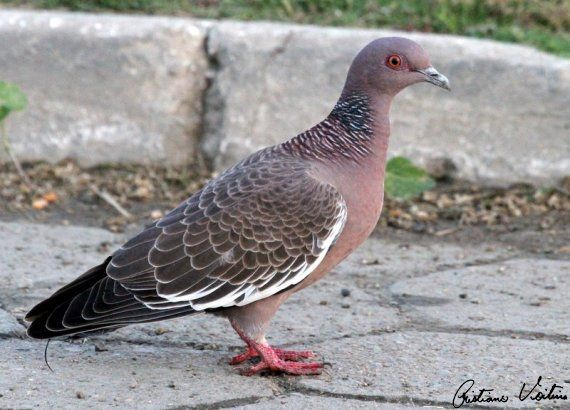
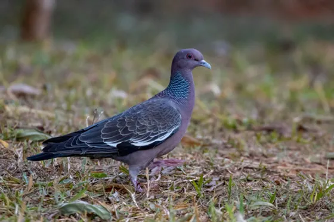
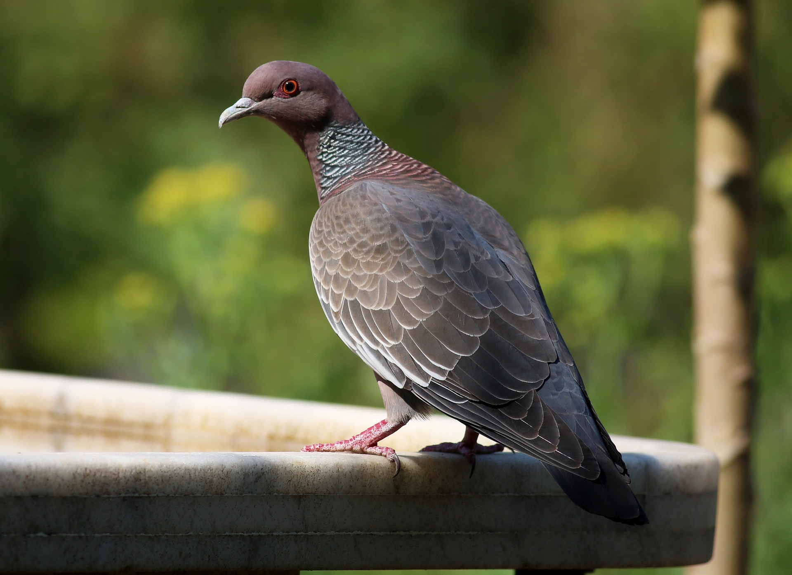
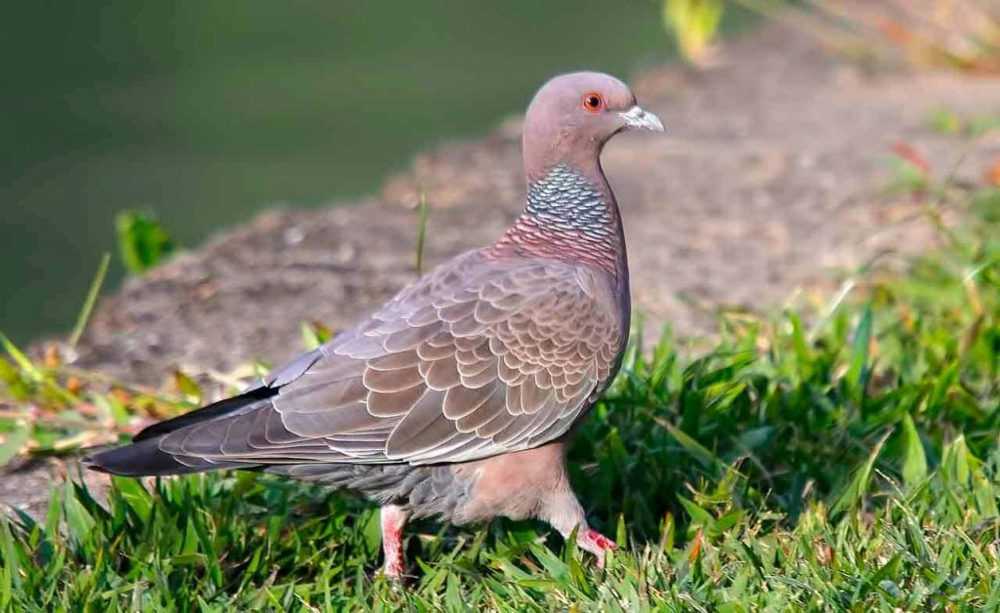
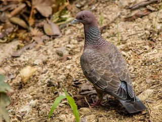
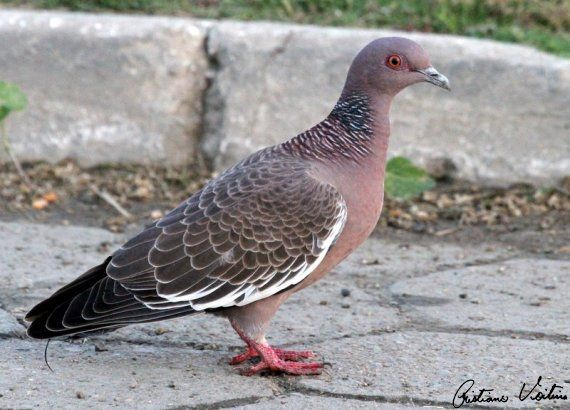
INFORMAÇÕES SOBRE O ANIMAL
- Nome Científico: Patagioenas picazuro
(Temminck, 1813) - Nomes Populares: Pombão, Asa-Branca.
- Atualmente a espécie não está e perigo de extinção.
Classificação Biológica
- Dominio: Eukaryota
- Reino: Animalia
- Filo: Chordata
- Classe Aves
- Ordem: Columbiformes
- Família: Columbidae
- Espécie: P. picazuro
Nutrição Geral
- Tipo de Nutrição: Heterotrófico.
- Alimentam-se de grãos, sementes, frutas e outros pequenos restos de alimentos.
Morfologia
- O macho, que emite um som mais grave, pode medir até 34 cm; a fêmea até 30 cm — o que faz desse o maior columbídeo do Brasil.
- Algumas características distintivas são o anel avermelhado ao redor dos olhos, o colar incompleto escamoso, a pele cinza e azul no pescoço e as asas cinzas com a listra branca que explica seu nome popular.(Asa Branca)
Comportamento
- Vive nos campos com árvores, áreas urbanas, cerrados, caatingas e florestas de galeria. Frequentemente encontrada no solo. É migratória como outras pombas, estendendo seus domínios acompanhando o desmatamento, aparecendo em grande quantidade. Voa longas distâncias e a grandes altitudes, exibindo seu espelho alar branco; está aproveitando as áreas urbanas, é comum ser encontrada comendo milho em galinheiros.
Ocorrência
- É uma ave columbídea endêmica da América do Sul, que ocorre no Brasil, do nordeste ao sul, no Paraguai, Uruguai, Bolívia e Argentina. A asa-branca vive em campos, cerrados, bordas de florestas e também em centros urbanos. As partes superiores de suas asas possuem uma faixa branca que é visível durante o voo.
- Mapa de Ocorrência 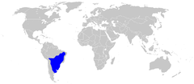
Reprodução
- Nidifica em todos os meses do ano no sudeste do Brasil. Os casais fazem ninhos em territórios demarcados pelo macho em voos altos e com batimento especial das asas. Constrói o ninho em árvores e a cerca de 3 metros do solo ou na parte baixa de uma árvore de cerrado na borda de cerradão; o ninho é achatado com gravetos frouxamente entrelaçados. O material do ninho é quebrado dos ramos secos no topo de árvores ou pego no chão. As vezes reutiliza o mesmo ninho mais de 30 vezes quando feito em muros de casas (observação pessoal de Thiago Almeida, ano de 2020/2022) principalmente quando existe abundância de alimento próximo ao local. O único ovo, branco, é incubado por 16 a 19 dias pelo casal que também se ocupa da criação do filhote. O filhote é alimentado pelos pais com o “leite de papo ou de pombo”, massa queijosa composta pelo epitélio digestivo do papo, que é fortemente desenvolvido em ambos os sexos durante a época da criação. Essa substância é regurgitada para ser recolhida pelos filhotes nos bicos dos pais. À medida que os filhotes vão crescendo são adicionadas sementes em ordem crescentes. O filhote saindo do ninho é semelhante aos pais, um pouco menor e com a faixa branca da asa quase inexistente. Após o período reprodutivo associa-se em bandos, executando migrações.
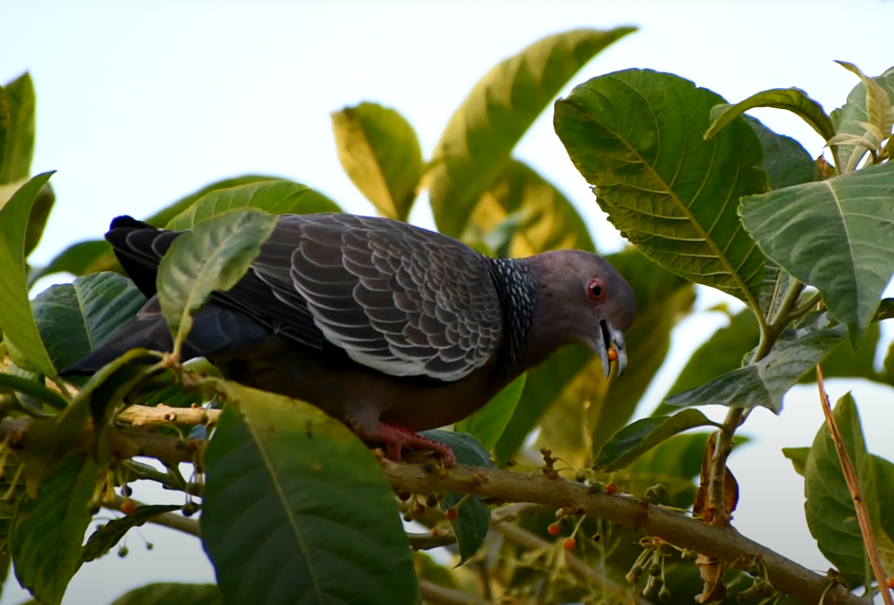
Pomba Asa-Branca se Alimentando.